Quality
Kualitas tinggi dalam setiap jahitan, mencerminkan profesionalisme perusahaan Anda.
Didirikan pada tahun 2017 dengan visi menjadi penyedia garmen berkualitas dan layanan profesional terkemuka di Indonesia.
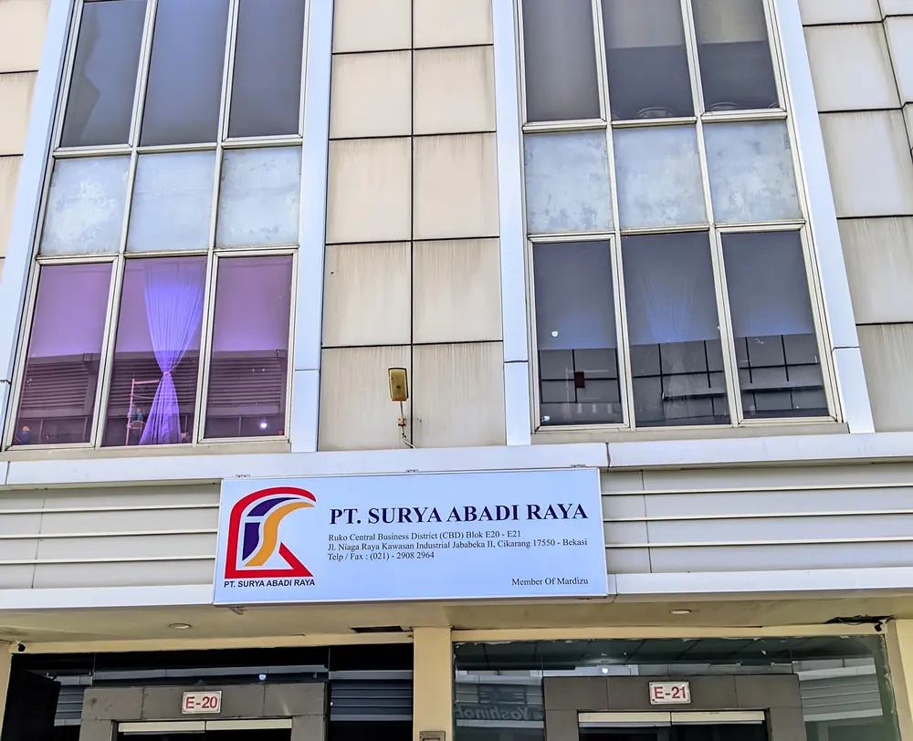
PT Surya Abadi Raya didirikan pada tahun 2017 dengan visi menjadi penyedia garmen berkualitas dan layanan profesional terkemuka di Indonesia. Selama bertahun-tahun, kami telah memperluas operasi kami hingga mencakup pelatihan kerja dan layanan alih daya, tetapi fokus utama kami tetap pada produksi garmen berkualitas tinggi untuk berbagai industri.
Dengan fasilitas canggih dan tim profesional yang terampil, kami berkomitmen untuk memberikan yang terbaik dalam segala hal yang kami lakukan. Dedikasi kami terhadap kualitas, inovasi, dan kepuasan pelanggan telah menjadikan kami mitra tepercaya bagi berbagai bisnis di seluruh Indonesia.
Kualitas tinggi dalam setiap jahitan, mencerminkan profesionalisme perusahaan Anda.
Kerja sama solid antara tim internal dan mitra, membentuk sinergi yang mendukung setiap proses produksi dengan maksimal.
Kami terus berinovasi dengan menghadirkan solusi dan desain kreatif yang menjawab kebutuhan dinamis dunia kerja.
Kami percaya bahwa kejujuran dan komitmen profesional adalah kunci utama membangun kemitraan jangka panjang.
Fondasi yang mengarahkan setiap langkah kami
Menjadi penyedia terdepan dan paling tepercaya dalam bidang pakaian berkualitas tinggi dan layanan profesional di Indonesia. Kami berupaya menetapkan standar baru dalam industri melalui inovasi berkelanjutan, keunggulan operasional, dan komitmen yang kuat terhadap kepuasan pelanggan.
Lebih dari sekadar menghadirkan produk unggulan, kami bertujuan memberikan dampak positif yang berkelanjutan—memberdayakan karyawan, memperkuat kemitraan, serta berkontribusi pada pertumbuhan dan kesejahteraan komunitas yang kami layani.
Memberikan pakaian berkualitas tinggi yang fungsional dan dirancang secara estetis untuk memenuhi beragam kebutuhan klien kami di berbagai industri. Kami berkomitmen untuk menghadirkan layanan terbaik melalui ketelitian dalam pengerjaan, kemitraan yang andal, dan solusi yang berpusat pada pelanggan.
Dengan menjunjung tinggi integritas, mendorong inovasi, dan terus berinvestasi pada pengembangan sumber daya manusia, kami bertekad menciptakan nilai tambah tidak hanya bagi klien, tetapi juga bagi karyawan, mitra bisnis, dan masyarakat luas. Misi kami bukan sekadar menjadi penyedia seragam—melainkan mitra tepercaya dalam membantu organisasi mengekspresikan identitas dan profesionalismenya di setiap jahitan.
Solusi Terpadu untuk Berbagai Sektor Industri
Fokus utama kami adalah menciptakan pakaian berkualitas tinggi untuk berbagai industri.
Proses produksi kami menekankan pengendalian kualitas di setiap tahap.
Lihat Katalog Produk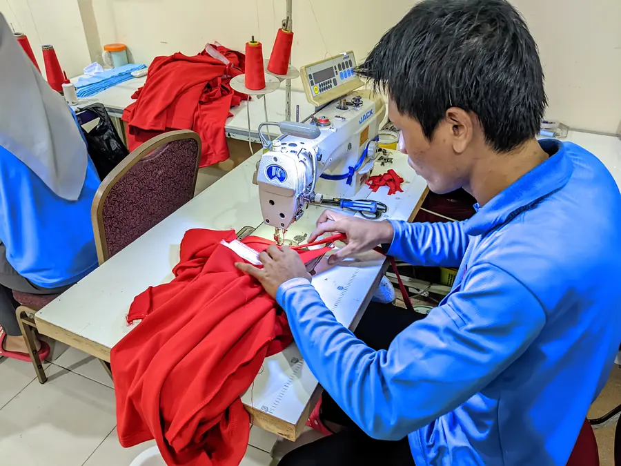
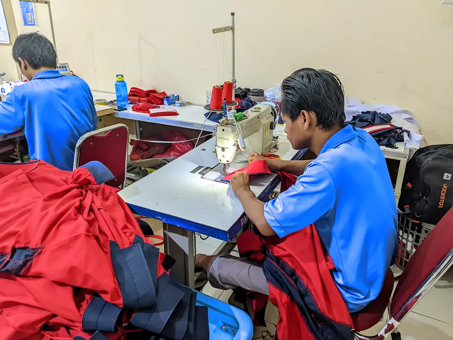
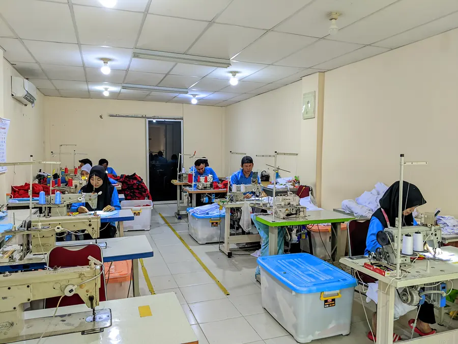
Klik untuk foto lainSolusi penyediaan tenaga kerja profesional untuk kebutuhan bisnis Anda.
Kami menangani proses rekrutmen, pelatihan, dan manajemen untuk hasil yang optimal.
Tanya Layanan Outsourcing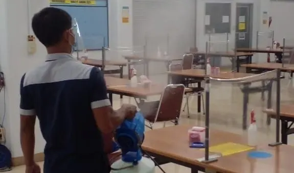
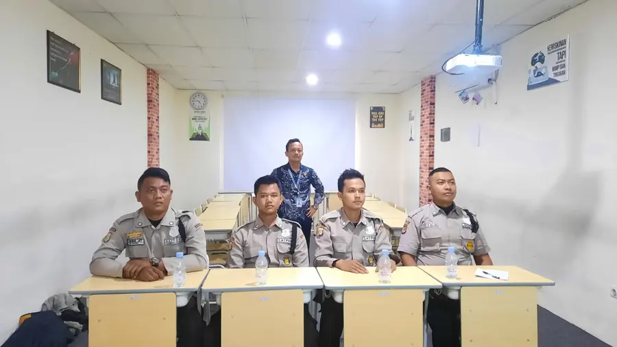
Klik untuk foto lainProgram pelatihan komprehensif untuk mengembangkan keterampilan dan jalur karier.
Kurikulum kami dirancang untuk memenuhi standar industri.
Tanya Program Pelatihan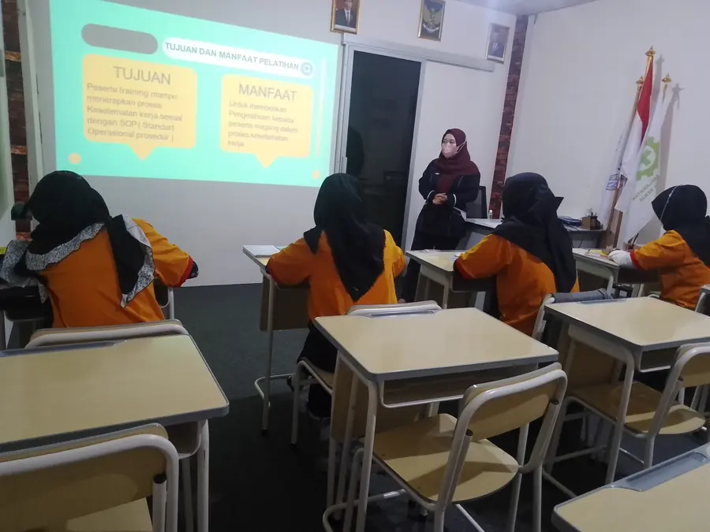
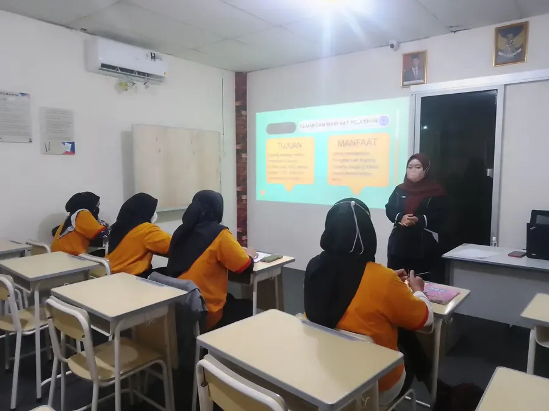
Klik untuk foto lainSolusi transportasi yang andal untuk keperluan bisnis maupun pribadi.
Kendaraan yang nyaman, bersih, dan siap digunakan untuk kenyamanan Anda.
Tanya Sewa Mobil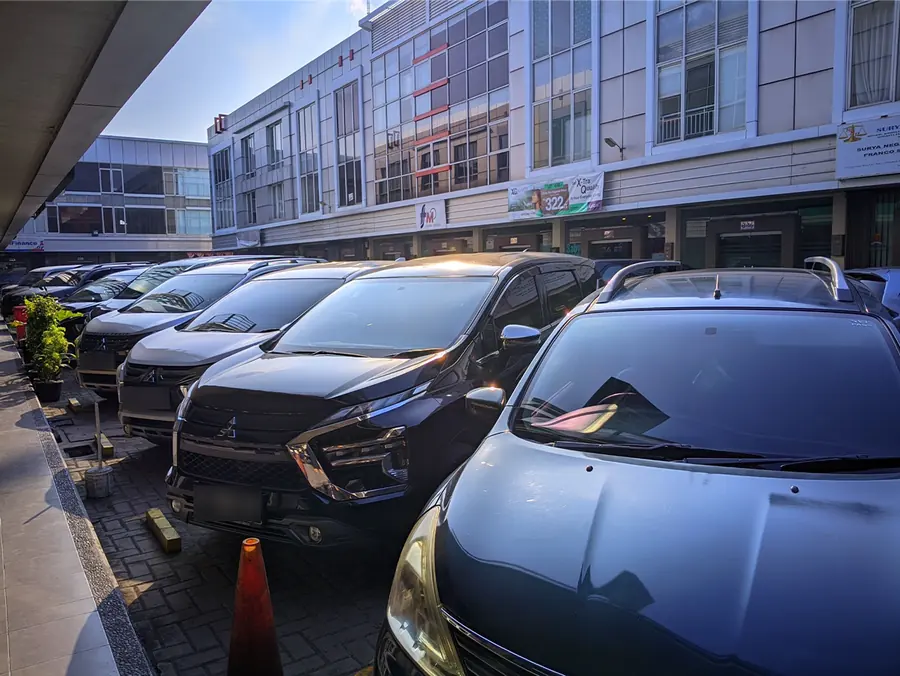
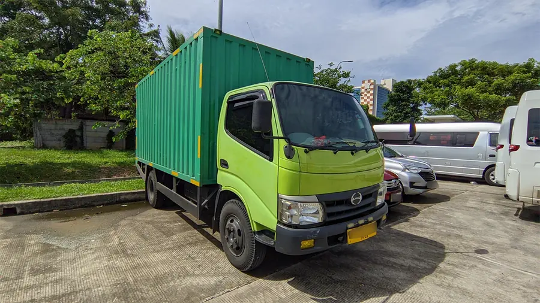
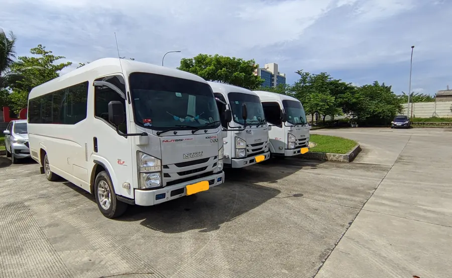
Klik untuk foto lainBeberapa perusahaan yang telah mempercayakan layanan kami
Cikarang, Bekasi
Cikarang, Bekasi
Cikarang, Bekasi
Cikarang, Bekasi
Cikarang, Bekasi
Cikarang, Bekasi
Cikarang, Bekasi
Cikarang, Bekasi
Cikarang, Bekasi
Cikarang, Bekasi
Cikarang, Bekasi
Sunter, Jakarta
Cibitung, Bekasi
Cikarang, Bekasi
Cikarang, Bekasi
Cikarang, Bekasi
Cikarang, Bekasi
Cikarang, Bekasi
Cikarang, Bekasi
Cikarang, Bekasi
Coba kata kunci lain atau tampilkan semua perusahaan.
Hubungi kami hari ini untuk mendiskusikan bagaimana kami dapat membantu perkembangan bisnis Anda.